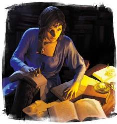
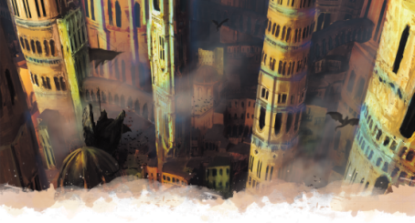

莫格雷夫大学的学者们称近五千年为人类时代，其标志着人类文明从索隆娜到科瓦雷的传播和兴起。柯兰堡大图书馆的侏儒贤者称它为龙纹时代，认为龙纹的出现和龙纹家族的成就在历史留墨中比单纯的人类成就更重要。大多数人对这场辩论持回避的态度，选择简单地把它称为现代。
不管你对这个论点的立场如何，在过去的五千年里发生了很多事。本节将通过一个时间简史重点介绍艾伯伦历史上一些关键时刻，然后深入探讨最近几千年来的一些更有趣的事件。
|
简史时间线Abbreviated
Timeline |
|
|
–4,100 |
伟大的奥阿里安被启蒙——有人说是护门人德鲁伊启蒙的祂，也有一种说法是巨龙瓦瓦拉克亲自启蒙的。岁月如梭，大德鲁伊奥阿里安，逐渐成为一个精神图腾，受到埃鲁登原野所有德鲁伊的尊敬。 |
|
–3,200 |
招待龙纹出现在塔兰塔平原的半身人身上。 阴影龙纹和死亡龙纹出现在艾伦诺的精灵身上。 |
|
–3,000 |
探险家拉扎尔从索隆娜带着一波人类殖民者来到科瓦雷的东岸，建立了拉萨尔邦联。 医疗龙纹出现在塔兰塔平原的半身人身上。 |
|
–2,975 |
收割者马伦在匕首河畔的地精遗迹中建立了一座堡垒，并命名萨拉特要塞。日后，它将扩展成为一个伟大的城市。 |
|
-2,800 |
人类在科瓦雷开始大规模扩张，进而与地精及其他土著发生冲突。 抄录龙纹出现在吉拉哥的侏儒身上。 |
|
–2,650 |
守护龙纹出现在日渐扩张的寇斯城人类身上。 |
|
–2,600 |
艾伦尼们发现，带有死亡龙纹的沃尔一族与离群的龙合作开展魔育实验，试图强化他们的龙纹。不朽王庭与阿贡尼森联手，彻底消灭了沃尔一族，那些支持沃尔一族的精灵被流放到科瓦雷。费奥兰家族也随着他们一起前往了科瓦雷。 |
|
–2,500 |
人类的足迹遍布科瓦雷，截然不同的几个殖民地逐渐演变成为科瓦雷中心地带的五个国家。五国雏形已现：达斯卡拉、寇斯、米卓、瑟利奥斯特和沃奥特。 创造龙纹出现在米卓的人类身上。 警戒龙纹出现在铁根山脉的矮人身上。 |
|
–2,400 |
沃奥特国王布雷戈尔摧毁了敌对的萨拉特城，宣称他将统治该地区。他重建了这座城市，并改名为萨恩。 |
|
–2,000 |
征服者卡恩夺取了寇斯，并建立了坎纳斯国。在扫荡了剩余的地精聚落后，他开始征服达斯卡拉、米卓、瑟奥利斯特和沃奥特，但没有成功。 暴风龙纹出现在达斯卡拉的半精灵身上。 |
|
–1,900 |
通行龙纹出现在瑟奥利斯特的人类身上。 |
|
–1,800 |
畜牧龙纹出现在瑟利奥斯特以西的人类身上。 阿达兰僧侣自愿成为梦灵的容器，离梦人出现了。 |
|
–1,800 |
在索隆娜，大分裂开始了。接下来的两百年间，梦族利用心控和贪欲在整个大陆挑起暴乱和战争。这些冲突导致有一批人类难民在来到科瓦雷的阴影湿地和恶魔荒原定居。这些来自索隆娜的提夫林和人类难民在现今的卓姆地区建立了Venomous Demesne。 |
|
–1,500 |
侦测龙纹出现在沃奥特的半精灵身上。十二学会自此建立，各大龙纹家族间建立了牢固的联盟关系，并制订了一系列行业规范。这导致了龙纹战争，因为十二家族致力于根除变异龙纹。萨恩城在龙纹战争的最后一战中被毁。 |
|
–1,043 |
伽利法·维纳恩在坎纳斯出生。 |
|
–1,022 |
伽利法·维纳恩登基成为坎纳斯的统治者。 |
|
–1,012 |
伽利法·维纳恩开始着手统一五国。他废除了自己领地的奴隶制，并承诺对敌国受压迫者也将在他的国家享有同等的自由。这吸引了大批地精支持他的事业。 |
|
–1,005 |
伽利法·维纳恩与十二家族举行会议，签署了《寇斯条约》，条约规定，龙纹家族将是一支中立力量，承诺将不会拥有封地或贵族封号，但家族们对工业拥有监督权和支配权，以此换取他们的支持。 |
|
–1,000 |
探索龙纹出现在阴影湿地的居民身上。 |
|
1 YK |
(–998) 经过长期的征服和外交努力，伽利法·维纳恩终于让科瓦雷诸国尽归他统治，他宣布这个国家为伽利法帝国。在塞尔之子——达克-伽利法统治时期末期，帝国建立了一套新的历法，并把这一年改称帝国元年（YK）。 |
|
2 YK |
伽利法一世任命他的五个成年子女为新帝国各行省的执政官。他以他的孩子们来重新命名这些地区。达斯卡拉被称之为瑟雷恩，米卓被称之为塞尔，瑟利奥斯特被称之为安黛尔，沃奥特以他的女儿布蕾的名字命名布雷兰。他的儿子坎恩统治的坎纳斯则保持不变。 |
|
5 YK |
伽利法一世和布蕾公主开始重建被毁的萨恩城。伊尔坦家族在建筑工程上投入了大量资金。 |
|
15YK |
伽利法一世创立了奥术评议会。 |
|
22 YK |
离群之龙萨蒙德拉莱克丝来袭。当瑟雷恩王子带着他的军队去对抗她时，龙屠杀了王子和他的军队。这场战斗被烧焦的地区在今天被称为灰烬森林。萨蒙德拉莱克丝也在数个世纪里销声匿迹。 |
|
28 YK |
长达十年的伽利法—拉扎尔战争开始了。 |
|
40 YK |
伽利法一世过完他的八十五岁大寿，皇帝宣布退位，将皇冠交予其长女塞尔。 |
|
53 YK |
伽利法一世逝世。 |
|
106 YK |
昆达拉克家族被其他龙纹家族承认，成为十二学会的一份子。 |
|
298 YK |
血与火之年。魔君贝尔·沙洛的封印部分破裂，邪魔们席卷瑟雷恩。 |
|
299 YK |
圣武士泰拉·麦伦自我牺牲以将贝尔·沙洛再次封印。她生前的盟友建立了银焰教会，银焰大圣堂围绕标志着她的牺牲之处的圣火建造。 |
|
347 YK |
林兰德家族占领了安黛尔海岸附近的一个岛屿，以此创建暴风里。 |
|
498 YK |
西维斯家族在探索阴影湿地时发现了探索龙纹的继承者。西维斯家族帮助湿地居民建立了萨拉释克家族，后者也很快得到了十二学会的承认。 |
|
512 YK |
达隆王下令在安黛尔建造观星台，现今观星台由奥术评议会使用以研究月亮和恒星。 |
|
778 YK |
一群美杜莎从凯博尔来到地面，他们在现今卓姆地区占据一一处名为卡萨克卓尔的达坎帝国废墟。 |
|
789 YK |
西维斯的通信站开始运营，极大地改善了长途通信。 |
|
802 YK |
伽利法帝国与龙纹家族合作，投资了位于希恩德瑞克北部半岛的贸易城市风暴湾的开发。 |
|
811 YK |
第一条闪电列车轨道通车：费尔海文到银焰堡。 |
|
830 YK |
兽化人在林间肆虐。安黛尔西部人民深受其害。 |
|
832 YK |
银焰守护者乔兰·索尔发动银焰大清洗以消除兽化人的威胁。一支圣殿武士部队被派往安黛尔，同时整个科瓦雷的圣殿武士们都开始追捕和消灭隐藏的兽化人。 |
|
845 YK |
加奥特王大兴基建，通过闪电列车网在科瓦雷中心地带的铺设。二十年间，列车轨道网将五国，吉拉哥，摩洛领和塔兰塔平原连成一片。 |
|
878 YK |
邓奈茨家族开始为客户提供来自达贡地区的地精雇佣兵。 |
|
882 YK |
守护者乔沃·达兰宣布银焰大清洗结束。 |
|
894 YK |
加奥特王，伽利法的末代统治者去世了。萨麟、凯乌斯和沃恩拒绝承认蜜珊的继位。沃加则选择支持他的姐姐，终末战争开战。 |
|
896 YK |
坎纳斯国王凯乌斯一世将沃尔之血奉为坎纳斯国教。翡翠利爪骑士团成立。 |
|
910 YK |
凯乌斯二世在凯乌斯一世神秘去世后坐上了坎纳斯国王的宝座。 |
|
913 YK |
在摩洛领的矿工意外挖到了他们国度地下的大空穴。 |
|
914 YK |
摩洛领在第一次钢铁会议宣布独立。瑟雷恩的萨麟王去世，银焰教会控制国家。 |
|
918 YK |
萨恩的琉璃之塔因不明原因被摧毁。 |
|
928 YK |
凡·IR·凯斯兰带领来自五国的移民建立夸巴拉。 |
|
956 YK |
泰伦那多的精灵雇佣兵占领了东塞尔，并宣布建立精灵国家维伦那。 |
|
958 YK |
在森林守护者的保护和大德鲁伊奥阿里安的指导之下，埃尔登原野宣布独立，。 |
|
959 YK |
塞尔部署了第一台战俑泰坦。 |
|
961 YK |
勃兰奈尔·IR·维纳恩登基成为布鲁兰国王。 |
|
962 YK |
吉拉哥正式与布鲁兰结盟。 |
|
965 YK |
卡尼斯家族完善了战俑工艺，活体构装生物开始投入战场。 |
|
969 YK |
雇佣兵军阀哈鲁克领导了一场大地精叛乱。达贡的地精宣布建国。 |
|
972 YK |
阴影龙纹家族的索兰尼家族与费奥兰家族分裂。 |
|
976 YK |
坎纳斯摄政王莫兰娜公开谴责了沃尔之血，并恢复天命诸神信仰作为坎纳斯的国教。寻者（Seekers）骑士团被解散，但翡翠利爪骑士团拒绝解除武装，其成员转入地下行动。 |
|
980 YK |
奥萝菈女王开始接手安黛尔的统治。 |
|
986 YK |
三只被称为索拉·科伦之女的鬼婆带着一队巨魔、怪物和来到卓姆。 |
|
987 YK |
勃兰奈尔王让撤回国民并封锁了灰墙山山脉以西的土地。索拉·科伦的女儿们宣布卓姆独立。 |
|
988 YK |
萨拉释克家族开始为卓姆可怕的雇佣兵们提供中介服务。达斯克黑帮在萨恩建立。 |
|
990 YK |
第一艘元素飞艇为林兰德家族服役。 |
|
991 YK |
凯乌斯三世开始统治坎纳斯。 |
|
992 YK |
一群非法的布鲁兰部队在萨恩建立了一个犯罪组织，谓之塔卡南家族。 |
|
993 YK |
洁拉·黛兰时年六岁，获得了银焰守护者的力量。 |
|
994 YK |
哀伤之日，塞尔被摧毁：哀伤故地。 |
|
996 YK |
《王座条约》签署，终末战争结束。条约正式承认安黛尔、布鲁兰、瑟雷恩、坎纳斯、塔兰塔平原、吉拉哥、夸巴拉、拉扎尔邦联、摩洛领、埃鲁登原野、达贡和维纶那为独立国家。卡尼斯家族被勒令摧毁所有旗下的创造熔炉，残存的战俑被赋予基本人权。 |
|
998 YK |
艾伯伦战役开始。 |

时期：大约1,500年前
最初的变异龙纹出现在真龙纹后不久。而当龙纹家族们组成十二学会时，变异龙纹已经遍布五国。十二家族中有些成员确实打心底觉得变异龙纹令人憎恶；另一些人则认为，他们好用的替罪羊，可以用来团结的家族，提升他们的地位。龙纹家族的宣传和放出的谣言进一步放大了民众对于变异龙纹的危险和失控的看法。从恐惧到暴力，邓奈茨家族的私兵，瓦塔利斯的追猎者和梅丹尼的拷问者开始打着“保护民众不受变异龙纹危害”付诸行动。
曾经的变异龙纹要比如今的更为强力且危险。十二学会在民间讲述着无辜者被失控龙纹所伤害的真实故事，并将其放大为迷信和恐惧。“龙纹战争”的这个标题看上去会让人以为双方都是势均力敌的，但事实上这更像是一场清洗而不是平等的战斗。到最后，变异龙纹的斗士们集聚到了一起以对抗龙纹家族。其中最臭名昭著的是哈拉斯·塔卡南和瘟疫女士，他们劫持了萨恩，并宣布那里变异龙纹携带着的避难所。最后，龙纹家族的军队包围了这座城市。当塔卡南和瘟疫女士看到胜利无望之时，他们释放了自己的全部力量。塔卡南的龙纹给了他控制大地的力量，以这股力量他摧毁了萨恩的诸塔。瘟疫女士从深渊召唤虫群，在废墟中传播邪恶的瘟疫。在城里避难的流浪者和进攻它的军队都遭此灭顶之灾。这导致萨恩在几个世纪间都是一片废墟，直到伽利法一世将它收复。
在龙纹战争期间，变异龙纹几乎被斩尽杀绝。当它们在数个世纪里后再次出现时，它们远比哈拉斯·塔卡南（Halas Tarkanan）惊天动地的力量要弱得多，但恐惧和偏见依然挥之不去。在最近一个世纪里，因为不明原因，变异龙纹开始以更高的频率和力量现世。被称为塔卡南的黑帮已经开始组织和培训那些拥有变异龙纹的人，他们担心接下来会有另一场清洗行动。
|
为什么重要？ 变异龙纹似乎不配让人们歧视他们。它不强，PC的变异龙纹很少会失控。但世人皆知，哈拉斯·塔卡南粉碎了萨恩的诸塔，瘟疫女士在小时候摧毁了她的村庄，"碎梦人"是一个把人们逼疯当娱乐的怪物。作为一个有变异龙纹的人，你承受着几个世纪以来的民间迷信、龙纹家族宣传并夸大的谣言重担。塔卡南家族领袖认为，第二次龙纹战争在未来必然会到来。如果你有变异龙纹，你会加入塔卡南家族，准备和龙纹家族打一架？又或者你会尝试改变大众的恐惧偏见？ |
时期：1~894 YK
征服者坎恩没能用武力统一科瓦雷，但数个世纪后，他的后裔伽利法·维纳恩通过武力和巧妙的外交手段做到了。伽利法不只是想要权力——他想建立一个更美好的世界，而且在很多方面，他都成功了。他废除了奴隶制，并制定了法律，承诺为所有人伸张正义。帝国推行的公民教育促进了商人阶级的崛起。有争议的是伽利法一世：《寇斯条约》禁止了龙纹继承人拥有封地或贵族头衔，但给了龙纹家族太多的经济特权，给他们达到如今垄断的地位形成了基础。
伽利法一世也可能因其制定的不靠谱的继承制度而受到指责。按照这一传统，在位君主的子女担任五个行省的执政官，其中最年长的统治塞尔。前任执政官一直担任摄政王，直到他的继承人成年，然后摄政王就要被要求退位。在历史进程中，这一体制导致了多次叛乱和分裂，终末战争只是其中最大以及最后的一次。
|
为什么重要？ 持续一个世纪的残酷战争使五国民心撕裂，但他们仍然被伽利法帝国时期留下的一系列通用法和习俗团结在一起。许多人将伽利法帝国时代视为黄金时代，他们愿意再次参战，争取机会重回到那个所谓的天堂。 许多国立机构-奥术评议会，王座堡，瑞肯马克军校最初都是为了伽利法帝国的共同利益而设立的。长寿种族的成员，如精灵和矮人，很可能在这些机构接受训练，而不管他们现在服务的是哪个国家。 |
时期：830–882 YK
在九世纪之前，兽化人基本上只是一个可怕的传说。在科瓦雷的荒野，人们都听说过狼人，但很少有人见过；大多数平民认为兽化人和化兽者是同一回事。九世纪以前，时期起了些变化——兽化诅咒开始变得极具危险性，感染者的行为变得愈加极端。在安黛尔西部，狼人和鼠人的祸患日益严重。到了830YK，人们开始担心是否有一场浩劫正在齐云森林间孕育——兽化人将横扫大地，毁灭所有文明。
832YK，银焰守护者乔兰·索尔宣称兽化人的灵魂被腐蚀了，必须将他们彻底消灭。一支圣堂武士部队被派往安黛尔，科瓦雷的银焰追随者们授命提高警惕，铲除藏匿的兽化人。他们也确实这么做了。
银焰大清洗持续了近50年。前20年是一场残酷血腥的战役。兽化人被不明的邪恶所驱使，成群结队地聚集在齐云森林边上（如今的埃鲁登原野的一部分）；大多数贤者们认为这是一个即将重获自由的魔君。圣殿武士们比他们强，但兽化人很狡猾，他们可以迅速补充族群的数量，他们还故意挑起圣殿武士和化兽者之间的冲突。然而经过几十年的激烈冲突，圣堂武士们笑到了最后。不知怎么地，诅咒的力量削弱了。虽然兽化病仍在散播，但它的影响并没有那么强烈，受害者也不再在黑暗中迷失。
虽然真正的威胁得到了解决，但安黛尔的农民却经历了几十年的恐怖记忆，他们开始寻求报复。在接下来的三十年里，一个后来被归类为极端教派的宗教团体——纯净之焰开始试图追捕所有剩下的兽化人。在这个过程中，许多无辜的人，包括许多化兽者被折磨和杀害。因此，银焰大清洗最初是一个高尚无私的行为，它很可能拯救了伽利法，但最终成为了偏执和仇恨的发泄渠道。
|
为什么重要？ 银焰大清洗是一个典型的例子，一个善行带来的血腥结果。它强调了银焰的目标是保护无辜者，但是恐惧、贪婪和愤怒会把理智的人引入歧途。这是纯净之焰的起源，一个极端教派，他们把银焰狭隘地理解为一种无情的武器，用以烧死邪恶的人。它在银焰的追随者和化兽者之间制造了一道深深的裂痕，并损害了化兽者在世界各地的声誉。 大清洗后，兽化症被认为是一个严重的公共卫生问题。圣殿武士会在尽可能的情况下对付任何确诊的兽化人，他们会设法逮捕并治愈他们，但致命的武力永远可能一种选择。兽化人可以在卓姆找到安全的避难所（尤其是黑狼会），在风暴湾、夸巴拉、达贡和其他边境国家仍然有一些分散的“thropes”。 如果你扮演一个银焰的追随者或是一个化兽者，思考一下你对大清洗的看法。同样地，如果你是来自安黛尔或埃鲁登原野，考虑一下你的家人是否在兽化人的恐怖袭击中受苦。 |
伽利法帝国在终末战争解体之前，持续了近千年。本节重点介绍了历史上一些特殊的时刻，可以作为冒险的灵感。但无论是在这本书中还是在更广泛的艾伯伦设定中，仍有大量的时间未被开发。
在你的战役中，无论是作为PL还是DM，如果能增加你想讲述的故事，你可以自由地开发和探索更多的历史时刻。不为人知的历史表提供了一个灵感的起点。作为一个DM，这可以增加故事的深度。玩家们是否已经到达了一家目前并不起眼的客栈？大概两百年前，那家客栈是一个农民联军的总部，他们起来反抗君主，结果遭到了残酷的镇压，他们仍然不太待见有高贵背景的人物！或者在塑造一个角色时，也许你的某个祖先是一个法师，他奥术上取得了重大的成就，结果却被龙纹家族所抹杀。
关键的一点是：既有历史只是一个起点，仅此而已。下面的灵感里只要你觉得对你有帮助的时候就用它们。要多去扩展世界，发展属于你的艾伯伦历史，即使它可能与将来出版的官方资料不符。
不为人知的历史
|
D12 |
触发事件 |
与 . . .有关 |
结果是.
. . . |
|
1 |
宗教分裂或出现异端 |
银焰教会 |
被遗忘了 |
|
2 |
叛乱或起义 |
农民联军 |
被当局掩盖了 |
|
3 |
暗杀或恐怖阴谋 |
十二学会或是奥术评议会 |
引起了长期的变革 |
|
4 |
奥术研究突破 |
维纳恩眷属（或是统治者） |
被残酷镇压 |
|
5 |
重要演讲 |
某个著名的奇械师或者法师 |
内部消化了 |
|
6 |
重大骚乱或一系列骚乱 |
龙纹继承人 |
与砂主有关 |
|
7 |
一场残酷的战斗 |
埃鲁登的德鲁伊 |
未曾被解读 |
|
8 |
超自然的灾难 |
黄泉巨龙会 |
引起了日后的的争斗 |
|
9 |
自然灾害或瘟疫 |
王座堡 |
死伤惨重 |
|
10 |
宗教审判或是清洗 |
天命诸神 |
被后世用以节日来纪念 |
|
11 |
继承人危机 |
某个野心勃勃的贵族 |
变成了一首流行歌曲 |
|
12 |
间谍行为被曝光 |
幻身灵，离梦人或是化兽者 |
重来ROLL一次 |